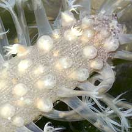
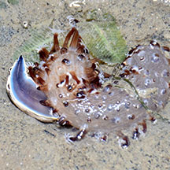
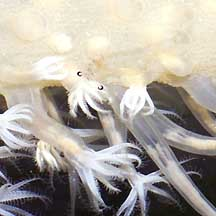
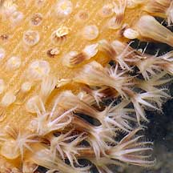
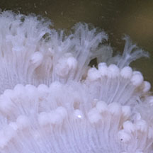

|
|
| seapens text index | photo index |
| Phylum Cnidaria > Class Anthozoa > Subclass Alcyonaria/Octocorallia > Order Pennatulacea |
| Sea
pens Order Pennatulacea updated Sep 2019
Where seen? These strange animals are commonly seen on our Northern shores. In soft, silty sand near seagrasses. At low tide, they are often retracted completely into the sand. Sometimes, an "uprooted" sea pen might be seen washed up on the shore or stranded in a pool. Please do not step on or pull sea pens out of the sand. You will hurt a whole colony of animals and the small creatures that live on them. What are sea pens? Sea pens belong to Phylum Cnidaria which includes the more familiar sea anemones, hard corals and jellyfishes. Sea pens are members of the same Class Anthozoa as sea anemones. Unlike sea anemones which are large solitary polyps, each sea pen is a colony of polyps. Sea pens belong to the Subclass Alcyonaria (Octocorallia) that includes the soft corals. Members of this subclass have tentacles which are branched and in multiples of eight. There are about 300 species of known sea pens. Features: Those seen on our shores average 15-25cm long. Sometimes really small ones 2-4cm long are seen. Each sea pen is a colony of different kinds of polyps connected to one another, each playing a different role. There is usually a central 'stem', called the axial or primary polyp, that supports the whole colony. The bottom half of the primary polyp forms a muscular 'foot' (called the peduncle) that anchors the colony and retracts the whole colony into the ground at low tide. This portion lacks other kinds of polyps. The central stalk is usually stiffened by an internal 'bone' made of calcium. You might sometimes come across this bone washed ashore. |
 The orange foot is visible in this Spiky sea fan that washed ashore. The orange foot is visible in this Spiky sea fan that washed ashore.Chek Jawa, Jul 05 |
 Expanded and retracted polyps of a Flowery sea pen. Changi, May 05 |

| The upper half called the rachis sticks out of the surface. The rachis
is the budding zone where other kinds of polyps emerge. Some may have
leaf-like structures (called oozoids). These leafy shapes make the
colony resemble a feather: sea pens are so named because they resemble
feather quill pens. Tiny polyps with 8 branched tentacles, called autozooids, emerge from these leaf-like structures when submerged. The stinging tentacles filter feed at high tide. These can retract fully. There is also another kind of highly modified polyp, called siphonozooids, that pump water into the colony to keep it rigid, and circulates water through the colony. Siphonozooids do not have tentacles and usually look like bumps or holes in the colony. They are usually much smaller and found among the autozooids. Some sea pens don't have leaf-like structures and the autozooids and siphonozooids are found directly on the 'stem'. At low tide, the autozooids are usually retracted. As a result, some sea pens look just like a stick stuck in the sand, or a floppy sausage on the sand. The colony might be stiffened by sclerites (tiny bits of calcium). Some have long sharp sclerites that support the feathery structures. Sea pens are adapted for life on soft sea bottoms. Here, they can dig into the ground for support. They retract completely into the soft ground when alarmed or at low tide. It is said that they can move along the bottom by looping their bodies. |
 A nudibranch that eats sea pens is lurking near this one. Changi, Aug 19 Photo shared by Loh Kok Sheng on facebook. |
 Commensal shrimp on a sea pen. All that can often be seen are a pair of eyes! Changi, May 05 |
| What do they eat? A few sea pens
may harbour zooxanthellae (symbiotic algae) inside their bodies. These
carry out photosynthesis and may contribute nutrients to the host
polyp. But most gather edible bits from the water. Snacking on sea pens: Sea pens are preyed upon by some snails and nudibranchs. The striped Armina nudibranch (Armina sp.) is among those seen near sea pencils, and appear to feed on these sea pencils. Pen pals: Sea pens are often homes to other small creatures. The tiny Painted porcelain crab (Porcellanella picta) is often found in the Common sea pen (Pteroides sp.). Sometimes, tiny transparent shrimps are seen on Flowery sea pens (Family Vertillidae) Human uses: These beautiful animals are sometimes taken for the live aquarium trade. However, they usually don't do well in captivity and eventually die of starvation. Status and threats: Sea pens are not listed as among the threatened animals of Singapore. However, like other animals harvested for the live aquarium trade, most die before they can reach the retailers. Without professional care, most die soon after they are sold. Those that do survive are unlikely to breed successfully. Like other creatures of the intertidal zone, they are affected by human activities such as reclamation and pollution. Trampling by careless visitors, and overharvesting by hobbyists also have an impact on local populations. |
| Sea pens on Singapore shores |
 |
 |
 |

 |
| Order
Pennatulacea recorded for Singapore from Wee Y.C. and Peter K. L. Ng. 1994. A First Look at Biodiversity in Singapore. Names from Erhardt, Harry and Daniel Knop. 2005. Corals: Indo-Pacific Field Guide. +from our observation.
|
Links
References
|